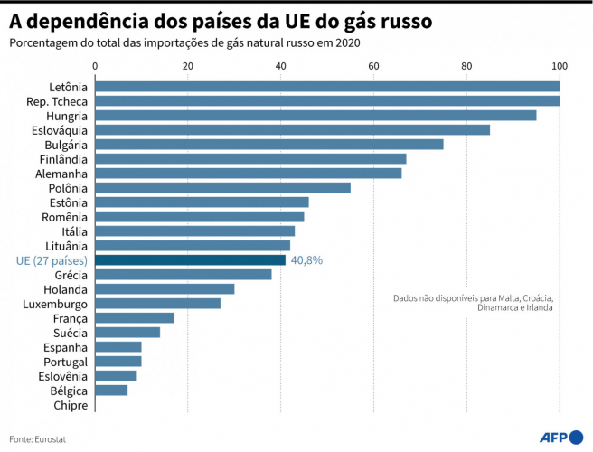

Russia
Rússia retoma fornecimento de gás para Europa e acaba com temor de corte permanente
A Europa voltou a receber nesta
quinta-feira, 21, o gás da Rússia. “Está funcionando”, declarou um porta-voz da sociedade
Nord Stream no início da manhã. As operações do gasoduto Nord Stream estavam paralisadas
desde o dia 11 de julho para manutenção anual. Cerca de 29 GWh de gás foram enviados na
segunda hora desde que o gasoduto voltou a funcionar para a estação alemã de Greifswald, no
Mar Báltico. Este gasoduto fornece cerca de um terço do gás que a União Europeia (UE) compra
anualmente. Depois de chegar à Alemanha, que é seu principal cliente e um país altamente
dependente da energia russa, o gás é exportado para outros países.
Segundo os primeiros dados publicados pela operadora
alemã desta rede, a Gascade, o fluxo equivale ao que este gasoduto registrava antes da
suspensão das operações para manutenção, que corresponde a 40% de sua capacidade. Essa
quantia vem sendo distribuída desde meados de junho, quando a Gazprom reduziu sua capacidade
de fornecimento através do Nord Stream argumentando que uma turbina estava em manutenção no
Canadá. A gigante russa afirmou que não poderia garantir a retomada do fornecimento pelo
gasoduto devido à ausência da turbina, necessária para o funcionamento de uma estação de
compressão.
